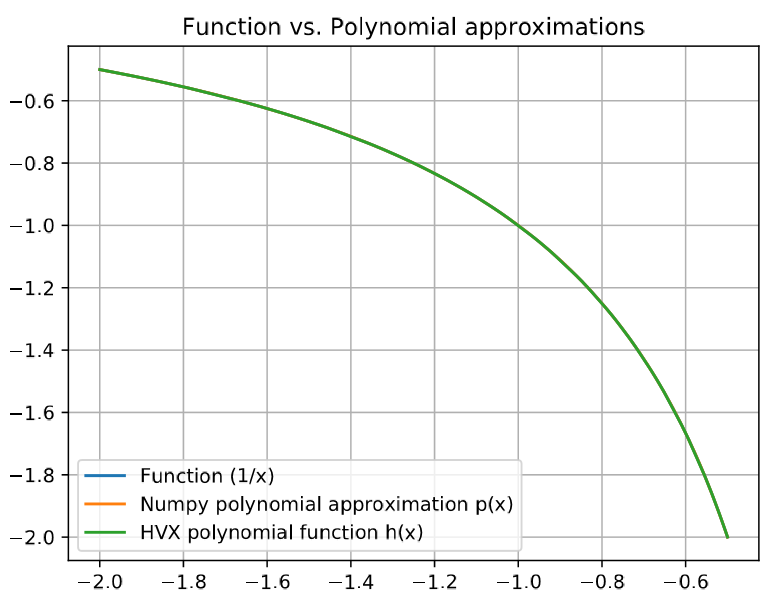
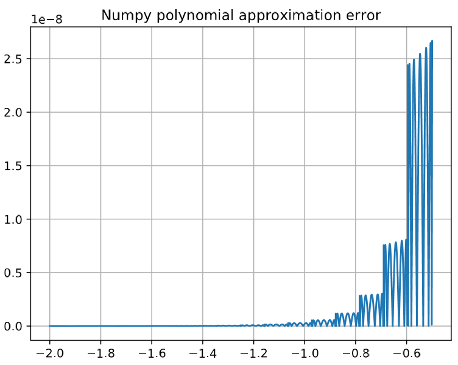
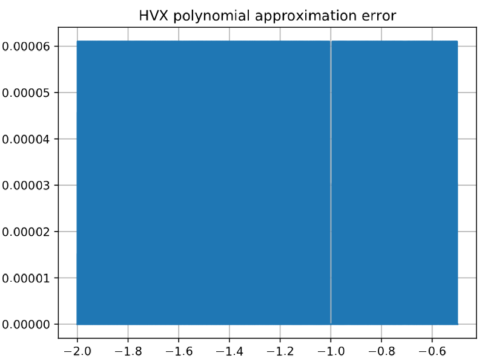
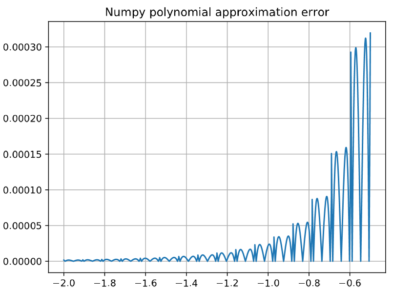
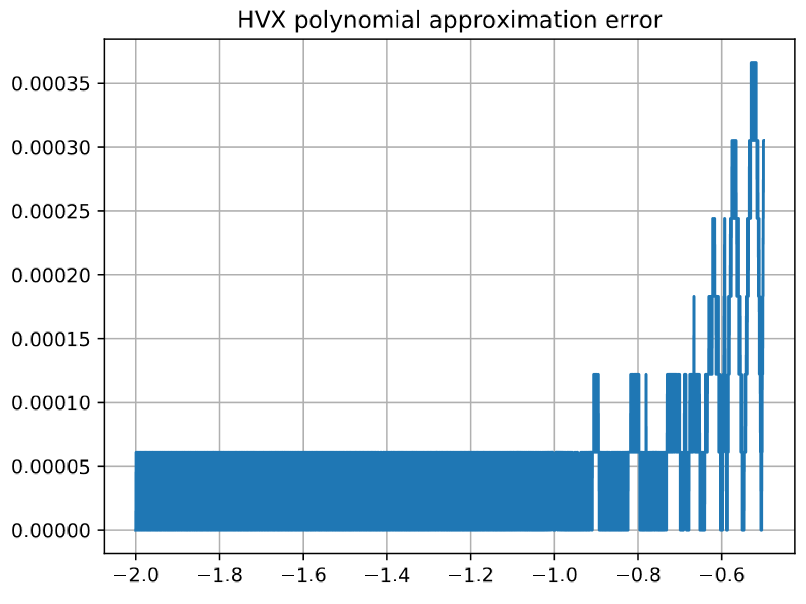

Qualcomm HVX Code Generator (QHCG)
Qualcomm HVX code generator (QHCG) is a tool generating optimized HVX code for polynomial approximations of arbitrary functions over a fixed number of intervals.
Overview
QHCG is available under $HEXAGON_SDK_ROOT/tools/qhcg.
QHCG is a tool that generates automatically an optimized HVX implementation of any arbitrary function. The QHCG user specifies an arithmetic function to be approximated, the range over which to approximate it, and the desired data type to use to represent the input and output data. The desired accuracy or polynomial order may also be provided and will be the same for all 16 evenly-spaced intervals on which the function is approximated. The default desired accuracy of the reference polynomial approximation, when not specified by the user, is 1 LSB for fixed-point implementations and 2 ULP for floating-point implementations.
QHCG finds the reference polynomial approximation of the lowest order that satisfies the desired accuracy. This polynomial approximation is then automatically implemented as optimized HVX code. QHCG also generates reports containing accuracy test results of HVX code, in which the output from the reference implementation in numpy is used as reference.
Limitations
-
The QHCG approximation tool doesn't always manage to produce an approximation that is accurate enough.
Some functions lend themselves better to polynomial approximations than others. In particular, function with high derivative values may not be approximated as accurately as other functions. For example, since the derivative of sqrt(x) is infinite for x=0, requesting a polynomial approximation of the function starting at the origin will result in a polynomial approximation with poor accuracy in the first segment.
-
The tool guarantees that the reference polynomial approximation meets the desired accuracy. However, the conversion of that polynomial into an HVX implementation degrades the accuracy further. It may therefore be necessary to experiment with the
polynomial_orderoption to see directly the impact of a higher or lower order on the HVX implementation accuracy. -
In some cases, the approximation may generate an incorrect value at one of the interval boundaries. Please review carefully the output pdf report to make sure the approximation is correct on the entire range of interest. If facing this bug, simply specify a slightly larger input interval than desired.
Setup
Prerequisites
Python 3 and pip3 are required to use QHCG.
The minimal supported version of Python is 3.4. Python 3.7 is recommended.
Linux setup
The setup script automates the steps of setting up a virtual environment venv3 in which all python dependencies needed to run the QHCG tool will be installed. To run the script, simply run:
cd setup
source setup.sh
-
During the QHCG setup, the Python module for creating a virtual environment should be automatically installed. If this step fails during the setup, try to install the virtual environment venv module manually:
With Python 3.4, install venv module with:
sudo apt install python3.4-venvWith Python version 3.5 or later, install venv module with:
sudo apt install python3-venv -
With Python 3.4, the Tkinter Python module is required and is expected to be installed automatically during QHCG setup. If this step fails during the setup, install it manually:
sudo apt install python3-tk
Windows setup
The setup script automates the steps of setting up a virtual environment venv in which all python dependencies needed to run the QHCG tool will be installed. To run the script, simply run:
cd setup
setup.cmd
-
If Python 3 is installed through the Windows Store, no additional setup is required.
-
If Python 3 is installed manually, do the following before running the QHCG setup or using QHCG:
- In the Python 3 installation directory, copy python.exe to python3.exe
- Make sure this directory is in the
PATHand that no Python 2 directory is in thePATH
Running the tool
Usage
If the user wants to generate a report that measures the accuracy of the generated HVX implementation, he or she should first run the setup_sdk_env script.
The user can start QHCG by using run_qhcg.cmd on Windows and run_qhcg.sh on Linux.
Both scripts have the same arguments. Some of the arguments are required, while other are optional.
Required arguments:
--input_range <input_range_start> <input_range_end>
Float input range on which the function needs to be approximated.
<input_range_start> Start value of function input range
<input_range_end> End value of function input range
--function <input_function>
"<input_function>" String description of the function to approximate.
--input_type <in_type>
HVX input vector type to use to generate an approximation.
<in_type> Supported values: int16, int32, float16, float32
The HVX output vector will be of the same type as HVX input vector.
Float HVX implementations will only run on Lahaina.
Optional arguments: -h, --help Show help message and exit
--tolerance <desired_accuracy>
Desired accuracy in LSB for fixed-point approximations and ULP for the
floating-point python polynomial approximation.
<desired_accuracy> Float value describing the desired accuracy.
--toolchain <hexagon_toolchain_path>
Set custom toolchain root path for Hexagon Tools. By default, QHCG will
search for the Hexagon tools included in the SDK once the setup_sdk_env
script has been run. If no toolchain is found, an HVX implementation will
still be generated but without an accuracy report.
<hexagon_toolchain_path> Hexagon tools path
--output_path <output_path>
Set custom output directory path. By default, `output` is used. Each new
execution overwrites any existing contents.
<output_path> Output folder. Both relative and absolute paths are supported.
--func_name <func_name>
Set custom function name. By default, `qhcg_approximation` will be used.
<func_name> Desired custom function name.
--optimize_by <mode>
Supported values: `accuracy` or `speed`. Default value is `accuracy`.
The `speed` option allows to produce a faster HVX implementation but with
some degradation on the accuracy. This option is currently supported for
input types int16 and float16. For int32 and float32 input types, the
speed option is ignored and defaults to accuracy.
--polynomial_order <order>
Positive integer representing the order of the polynomial approximation to use.
By default, QHCG searches for the lowest polynomial order that meets the accuracy
requirements of the reference floating-point python polynomial approximation.
--exec_bench
Run the HVX approximation on the Hexagon simulator to estimate the cycle count performance
element of the generated HVX approximation. This option increases the processing time.
--bundle
Execute QHCG in bundle mode. The destination folder will not be deleted initially
and new HVX implementations will be added to the same destination folder.
--summary
Generate a shorter accuracy report that does not generate an error graph for each
approximation interval.
Example
The following command will generate an HVX implementation comprised of 16-bit input and output fixed-point elements. This implementation will approximate the inverse function over the range [-2;-0.5] within 1 LSB.
./run_qhcg.sh --input_range -2 -0.5 --function "1/x" --input_type int16
Note: If this is the first time QHCG is run, the setup script introduced in the previous section will be invoked automatically.
Tool output
The structure of the output directory that QHCG generates is as follows.
Note: The example is given here for a 16-bit fixed-point implementation. Names will vary slightly for other requested data types.
.
├── qhcg_approximation_coefficients.txt
├── HVX_code
│ ├── build
│ │ ├── bench_qhcg_approximation.elf
│ │ ├── bench_qhcg_approximation.o
│ │ ├── qhcg_approximation.o
│ │ ├── test_qhcg_approximation.elf
│ │ └── test_qhcg_approximation.o
│ ├── inc
│ │ └── qhcg_approximation.h
│ ├── Makefile
│ ├── src
│ │ ├── disassembly
│ │ │ └── qhcg_approximation.S.dump
│ │ └── c
│ │ └── qhcg_approximation.c
│ └── test
│ ├── bench_qhcg_approximation.c
│ ├── test_data
│ │ ├── inputs_16f.txt
│ │ ├── outputs_16f_hvx.txt
│ │ └── outputs_16f_np.txt
│ └── test_qhcg_approximation.c
├── qhcg_args.tapproximation_args.txt
├── qhcg_consolapproximation_console.log
├── README
├── report
│ ├── qhcg_approximation_acc_report.txt
│ ├── qhcg_approximation_detailed_report.pdf
│ └── qhcg_approximation_summary_report.pdf
└── versions.log
The HVX_code directory contains source C code with intrinsics, header files, and disassembly of the generated HVX code as well as accuracy and performance tests.
The report directory contains results of accuracy and performance tests. Performance tests indicating how many cycles it takes to process one element on average are only generated when the exec_bench option is used. The report also provides various graphical reports, including:
-
a graphical representation of the reference function and its approximations on the requested interval

-
a graphical comparison between the reference function and the generated Python polynomial approximation in IEEE floating-point

-
a graphical comparison between the reference function and the generated HVX implementation (with 16-bit fixed-point data in the present example)

Note:
As shown in the graph above, the error on the HVX implementation is either 6.1 10^-5 or very small. This means that the error generated by the polynomial approximation is much smaller than the error generated with the HVX implementation, which works on fixed-point data in this example. If the error of the HVX implementation is smaller than required by the end user, it is then worth reducing the polynomial order of the approximation to find an implementation for which the error caused by the floating-point polynomial approximation is in the same range as the error caused by the data conversion performed in the HVX implementation. (If instead the error of the HVX implementation is larger than required by the end user, the user will need to use a different data type, such as int32 or qf32.)
For example, reducing to a polynomial order of degree 2 using the option --polynomial_order 2, we increase the maximum error of the polynomial approximation in floating-point format to 3 10^-4:

In that case, the additional error introduced by manipulating fixed-point data in HVX has a only a small impact on the error caused by the polynomial approximation: max error of 3.6 10^-4 instead of 3 10^-4:

The HVX output directory also contains the polynomial coefficients, the QHCG arguments that were used, and the console log generated when running the tool.
The console log output provides various information including:
-
the accuracy achieved by the polynomial approximation in floating-point using python
Python polynomial approximation (NumPy polynomials package): Accuracy: Max error [float]: 2.6212205517239795e-08 RMS error [float]: 4.358666622225132e-09 Mean error [float]: 1.4734534072136096e-09 -
the selected polynomial order,
Chosen polynomial order: 5 -
the accuracy of the HVX polynomial approximation implementation:
HVX polynomial approximation: Accuracy: Max error [float]: 6.103515625e-05 RMS error [float]: 3.0517498897803145e-05 Mean error [float]: 3.0448039372762043e-05 Max error [ULP]: 0.125 RMS error [ULP]: 0.05625569552185018 Mean error [ULP]: 0.05219268798828125
A detailed explanation of each of the generated file can be found in the README file generated by QHCG in the output directory.